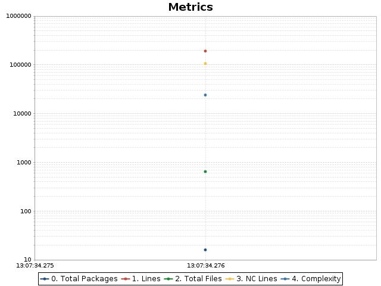
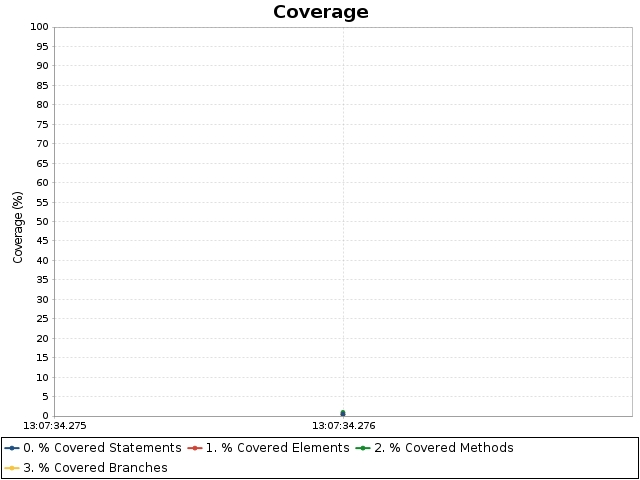

OpenClover
Linked reports
compiler
Help
compiler
Coverage overview
Added classes
Changed classes
Charts
Historical coverage report
Date range
From:
Thu Feb 2 2023 13:07:34 MST
To:
Thu Feb 2 2023 13:07:34 MST
Code metrics
Branches:
18,094
Statements:
49,948
Methods:
9,649
Classes:
1,358
Files:
645
Packages:
16
LOC:
192,199
NCLOC:
106,901
Total complexity:
24,051
Complexity density:
0.48
Statements/Method:
5.18
Methods/Class:
7.11
Classes/Package:
84.88
Average method complexity:
2.49
Branches:
18,094
Statements:
49,948
Methods:
9,649
Classes:
1,358
Files:
645
Packages:
16
LOC:
192,199
NCLOC:
106,901
Total complexity:
24,051
Complexity density:
0.48
Statements/Method:
5.18
Methods/Class:
7.11
Classes/Package:
84.88
Average method complexity:
2.49
Coverage overview
Conditionals
Statements
Methods
TOTAL
Project
0.2%
0.5%
0.9%
$sortValue
0.5%
Added classes
Changed classes
Charts

